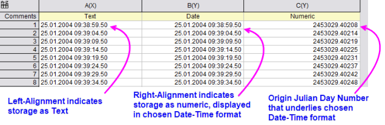

Zahlen in Origin
Number-in-Origin
Im Folgenden wird allgemein erörtert, wie numerische Werte in Origin verarbeitet werden.
So werden Zahlen in Origin gespeichert
Origin-Arbeitsmappen und -Matrixmappen unterstützen die folgenden Datentypen:
| Arbeitsmappe |
Matrixmappe |
Bytes |
Wertebereich |
|
double
|
double
|
8
|
±1,7E±308 (15 Stellen)
|
|
real
|
float
|
4
|
±3,4E±38 (7 Stellen)
|
|
short
|
short
|
2
|
-32.768 bis 32.767
|
|
long
|
int
|
4
|
-2.147.483.648 bis 2.147.483.647
|
|
char
|
char
|
1
|
-128 bis 127
|
|
Byte
|
char, ohne Vorzeichen
|
1
|
0 bis 255
|
|
ushort
|
kurz, ohne Vorzeichen
|
2
|
0 bis 65.535
|
|
ulong
|
int, ohne Vorzeichen
|
4
|
0 bis 4.294.967.295
|
|
complex
|
complex
|
16
|
±1,7E±308 (15 Stellen), alle 8 Bytes
|
Weitere Informationen finden Sie unter:
Angezeigter Zellenwert vs. tatsächlicher Zellenwert
Wenn Sie Ihre Daten in eine Arbeitsmappe oder Matrixmappe importieren oder eingeben, verwendet Origin eine Kombination von benutzerdefinierten Einstellungen, um die Anzeige der Daten in jeder Zelle zu bestimmen. Beachten Sie jedoch, dass das, was angezeigt wird, nur eine visuelle Darstellung der Datenwerte ist und dass die tatsächlichen Datenwerte mit der vollen Genauigkeit gespeichert sind, die der Datentyp des Datensatzes, wie oben erwähnt, zulässt. Wenn Sie Berechnungen durchführen, werden die tatsächlichen Datenwerte verwendet und nicht die angezeigten.
Weitere Informationen finden Sie unter:
Anzeige von Zahlen, die die Zellenbreite überschreiten
 | Vor Origin 2020b, wenn die Zeichenabfolge in einer Blattzelle die Menge überschritten hat, die in der aktuellen Zellenbreite (Spaltenbreite) angezeigt werden konnte, zeigte Origin den Inhalt als eine Reihe von Rautezeichen an (######). Dies hat sich geändert in Anlehnung an das Arbeitsblattverhalten von MS Excel:
|
- Textzeichenketten zeigen nun keine Rautezeichen ###### mehr an, unabhängig von der Spaltenbreite. Um die vollständige Zeichenkette anzuzeigen, müssen Sie die Spaltenbreite vergrößern.
- Numerische Werte, die die Spaltenbreite überschreiten, werden zuerst auf die nächstliegende Dezimalstelle gerundet und, nur wenn dies nicht ausreicht, um die volle ganze Zahl anzuzeigen, werden Rautezeichen ###### anstelle vom numerischen Wert angezeigt.
- Dieses Runden der numerischen Werte hat nur Einfluss auf den angezeigten Wert (siehe vorherigen Abschnitt). Der intern gespeicherte Wert ändert sich nicht.
- Um das alte Verhalten wiederherzustellen, bei die Rautezeichen ###### angezeigt wurde, wenn der Zelleninhalt nicht vollständig angezeigt werden konnte, setzen Sie die Systemvariable @WPE = 1. Eine Anleitung, wie Sie den Wert einer Systemvariablen ändern, finden Sie in dieser FAQ.
Fehlende Werte im Arbeitsblatt oder Matrixblatt
Als Tabellenkalkulationsprogramme zum ersten Mal aufkamen, konnte man bald feststellen, dass eine spezielle Zahl erforderlich war, die Nicht-eine-Zahl war und - wenn sie in einer Berechnung verwendet wurde - sich selbst erzeugte. Origin verfügt über so eine Zahl und ihr interner Wert ist:
- -1.23456789E-300
Da Origin diesen Wert als einen speziellen Wert erkannte, kann er verwendet werden, um einen fehlenden Wert in einem Arbeitsblatt (oder einer Matrix) einzugeben, und er kann in Berechnungen oder Skripten eingesetzt werden (zum Beispiel für die Rückgabe eines fehlenden Werts, es sei denn eine Bedingung wird erfüllt). Origin zeigt fehlende Werte in einem Arbeitsblatt oder Matrixblatt mit "--" an. Sie sollten diese Anzeige (Ausgabe) jedoch nicht damit verwechseln, was Sie selbst als fehlenden Wert eingeben (Eingabe).
| Wenn Sie vor Version Origin 2019 Zellen übersprungen haben, während Sie Werte in eine Arbeitsblattspalte eingaben, wurden die übersprungenen Zellen als fehlende Werte behandelt und das Symbol "--" wurde automatisch in die Zelle eingegeben. Wenn Sie eine Arbeitsblattzelle ausgewählt haben und Löschen im Kontextmenü wählen, wurde die Zelle außerdem als ein fehlender Wert behandelt. Seit Origin 2019 werden keine fehlenden Werte in übersprungene oder gelöschte Arbeitsblattzellen gefüllt. Sie werden einfach leer gelassen. Um zum Verhalten vor 2019 zurückzukehren, setzen Sie die LabTalk-Systemvariable @CDB = 0 (weitere Informationen zum Ändern des Werts einer Systemvariable, siehe diese FAQ).
|
Weitere Methoden der Eingabe von fehlenden Werten:
- Für allgemeine Zwecke können Sie manuell fehlende Werte in eine gesamte Arbeitsblattspalte mit der Funktion NA() durch Eintippen von "
Na()" in F(x)= eingeben. Um fehlende Werte manuell in einzelne Zellen einzugeben, geben Sie "=Na()" ein oder markieren Sie eine Zelle und drücken Sie Strg + Löschen (wenn @CDB=1 (Standard)).
- Um einen fehlenden Wert in einer Gleichung festzulegen (zum Beispiel im Dialog Werte setzen), teilen Sie etwas durch Null oder wählen Sie die Funktion Na() (Funktion: Sonstiges im Menü Werte setzen).
- Wenn eine Arbeitsblattspaltenformat auf Numerisch eingestellt ist, wird die Eingabe jeglichen Textes (z. B. "fehlend" oder "--") den Zellenwert auf einen fehlenden Wert setzen. Für Arbeitsblattspalten, die ein anderes Format als Numerisch aufweisen, können Sie fehlende Werte manuell einfügen, indem Sie etwas über die Tastatur eingeben, dass Origin als ungültig für diesen Spaltentyp erkennt (zum Beispiel zeigt Origin "--" an, wenn Sie "13" in eine Zelle einer Spalte mit dem Format = Monat eingeben).
|
Hinweis: Nur Datentyp = Double(8) unterstützt fehlende Werte.
|
Die Notationen Dezimal, Wissenschaftlich und Technisch (Ingenieur)
Sie können wählen, mit welcher Notation Daten in der Arbeitsmappe bzw. Matrixmappe angezeigt werden sollen: Dezimal:1000, Wissenschaftlich:1E3, Technisch (Ingenieur):1k und Dezimal:1.000. Abgesehen von der manuellen Wahl, Daten in Arbeits- oder Matrixmappe mit Hilfe wissenschaftlicher Notation anzuzeigen, können Sie auch festlegen, dass, werden bestimmte Schwellenwerte überschritten, die ausgewählte Datenanzeigeoption überschrieben und Zahlen automatisch mit Hilfe wissenschaftlicher Notation angezeigt werden. Standardmäßig werden diese Schwellenwerte der wissenschaftlichen Schreibweise auf 6 (oberer) und -3 (unterer) gesetzt. Wenn der obere und untere Wert 6 bzw. -3 ist:
- Werte in dem Bereich 1x10^-3 bis 1x10^6 werden mit Hilfe der Einstellung in der Auswahlliste Anzeige im Dialog Eigenschaften von Arbeits- oder Matrixmappen (Dezimal, Wissenschaftlich oder Technisch (Ingenieur)) angezeigt.
- Werte, die entweder den unteren oder den oberen Schwellenwert überschreiten (kleiner als 1x10^-3 oder größer als 1x10^6) werden in wissenschaftlicher Schreibweise angezeigt, unabhängig von der Einstellung in der Auswahlliste Anzeige.
Einstellungen für die automatische Anzeige in wissenschaftlicher Schreibweise finden Sie auf der Registerkarte Zahlenformat im Dialogfeld Optionen.
Benutzerdefiniertes Anzeigeformat
Es ist wichtig, zu erkennen, dass die Arbeitsblattdaten entweder als numerische Daten, Textdaten oder fehlender Werte behandelt werden, unabhängig davon, was im Arbeitsblatt angezeigt wird. Wenn die gespeicherten Daten nicht als numerisch erkannt werden, werden sie als Textzeichenketten oder als fehlender Wert behandelt. Es gibt keine andere Option:
- Wenn die angezeigten Daten Text sind, wird der Text buchstäblich gespeichert.
- Wenn Daten als eine Art numerische Daten angezeigt werden, einschließlich Datums-/Zeitdaten, die entsprechend in der Arbeitsblattspalte konfiguriert wurden, so dass Origin sie als Datums-/Zeitdaten und nicht als Textzeichenketten behandelt, werden diese Daten als eine Zahl gespeichert.
Das Origin-Arbeitsblatt unterstützt eine Vielzahl von benutzerdefinierten Formaten, mit denen Sie Ihre numerischen Daten in einer Form anzeigen können, die am geeignetsten für Sie ist (z. B. "0,12" oder "12 %"). Dabei werden die zugrunde liegenden numerischen Werte bewahrt. Diese benutzerdefinierten Formate müssen festgelegt werden oder, wie zuvor erwähnt, Ihre Daten können als Textdaten oder fehlende Werte behandelt werden.
Die folgende Tabelle fasst kurz die Typen der benutzerdefinierten Anzeigeformatoptionen zusammen, die für Spalten der Arbeitsblattdaten mit einem der Formate Text & Numerisch, Numerisch oder Datum und Zeit zur Verfügung stehen. Befolgen Sie die Links, um mehr Einzelheiten zu erfahren.
| Format |
Optionen für das benutzerdefinierte Anzeigeformat |
| Text & Numerisch, Numerisch |
- Optionen für die Anzeige von Dezimalstellen, signifikante Stellen, Prozentangaben, Bruchteile, Exponenten, Auffüllen oder Abschneiden von 0en, benutzerdefinierte technische oder wissenschaftliche Notationen, Grad-Minuten-Sekunden, Textpräfix oder -suffix etc. Siehe benutzerdefinierte numerische Formate.
|
| Zeit |
|
| Datum |
|
Datums- und Zeitangaben in Origin
Wie oben erwähnt werden Daten in einem Origin-Arbeitsblatt entweder als Textwerte, numerische Werte oder fehlender Werte behandelt. Origin speichert Datumsdaten intern als einen numerischen Wert, der unabhängig von der Formatierung ist, die für die Anzeige eines Datums oder einer Zeitangabe im Arbeitsblatt verwendet wurde. Das Arbeitsblatt kann zum Beispiel einfach konfiguriert werden, um die Zahl "2458283" als "6/14/2018" oder als "Donnerstag, 14. Juni 2018" oder als ein benutzerdefiniertes Format für Datum und Zeit Ihrer Wahl anzuzeigen. Der Punkt ist, dass jedes gewählte Datums- und Zeitformat nur eine visuelle Darstellung eines zugrunde liegenden numerischen Werts ist.
Origins mathematisches Standardsystem für Datum und Zeit basiert auf den astronomischen Julianischen Tageszahlen. Diese definieren den 1. Januar –4712, 12 Uhr mitteleuropäische Greenwich-Zeit als Null. Origin verwendet einen 12-Stunden-Ausgleich, damit die 0te Stunde mit Mitternacht übereinstimmt. Annahmen zu Zeitzonen oder zu jeder Art von Zeitverschiebungen (wie Sommerzeiten) werden nicht berücksichtigt.
Nach diesem System hat z. B.:
- der 11. Juni 1998, 21:23:01
in Origin eine Julianische Tageszahl von
- 2450975,890984.
Addieren Sie hierbei 0,5 (Origins 12-Stunden-Ausgleich), um die richtige Julianische Tageszahl von 2450976,390984 zu erhalten.
Die Julianische Tageszahl in Origin wird verwendet, um Datums- und Zeitdaten intern zu speichern und mit ihnen zu arbeiten. Denken Sie daran, wenn Sie "Datums-" oder "Zeit"daten in das Arbeitsblatt eingeben oder importieren, dass Origin diese importierten Werte per Standard als Text behandelt. Ihr visueller Hinweis, dass Datums-/Zeitwerte als Text behandelt werden, ist, dass diese Daten links ausgerichtet angezeigt werden.
- 
Damit Origin beides tun kann, Ihre Datums-/Zeitdaten im richtigen Format anzeigen und die Datums-/Zeitdaten intern als eine Julianische Tageszahl von Origin speichern, die für mathematische Operationen oder zum Zeichnen verwendet werden kann, muss die Arbeitsblattspalte richtig konfiguriert werden. Weitere Informationen finden Sie unter:
 | Seit Version 2019 bietet Origin zwei alternative Zeitsysteme: (1) einen wahren Julianischen Datumswert (0 ist der Mittag anstatt die folgende Mitternacht) und (2) ein "2018"-System, in dem 0 als 00:00 am 1. Januar 2018 definiert wird. Das 2018-System unterstützt eine größere Präzision, wenn z. B. Daten mit dem Importassistenten importiert werden (z. B. unterstützt Benutzerdefiniertes Datumsformat "MM'/'dd'/'yyyy HH':'mm':'ss'.'######"). Zuvor war die Präzision auf 0,0001 Sekunden beschränkt. Weitere Informationen finden Sie unter Daten und Zeiten in Origin. |